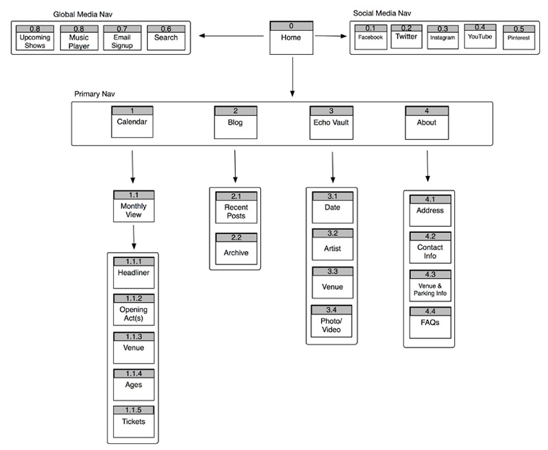
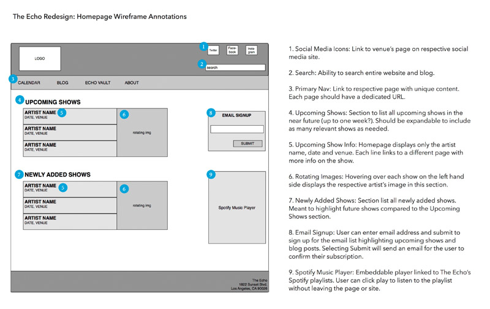
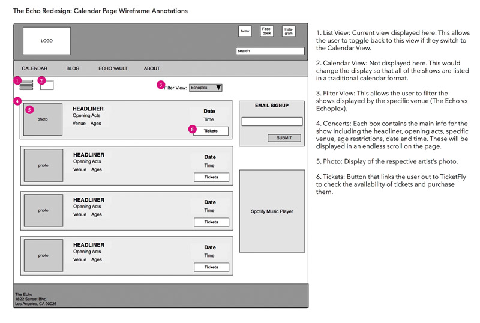
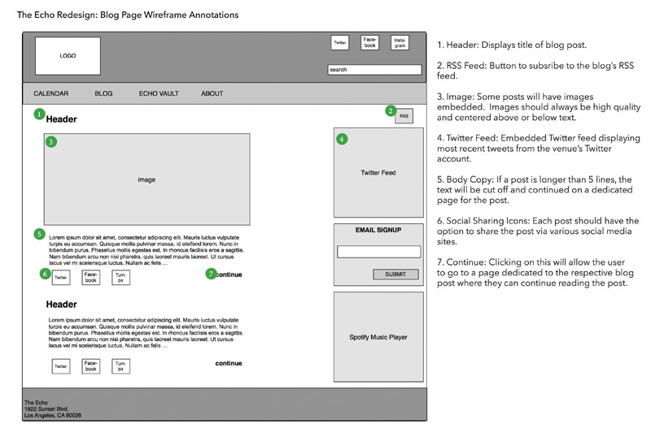

The goal of this project was to pick a local business and apply the UX process to redesign their website. The focus was solely on the user experience and did not involve any UI. The website I chose was for a local music venue in Los Angeles. Their homepage at the time of this project was an endless scroll of rectangular banners showcasing upcoming shows. My initial thought upon entering the site was that it felt very cluttered and overwhelming and I wasn’t sure where to look. This was also validated in my user interviews.
I started the redesign by performing a thorough content audit of the site as well as a competitive analysis of similar websites in the area to pinpoint commonalities and differences. After a couple of user interviews and some research on concert attendee demographics, I was able to develop personas for the redesign. Using these personas, I developed user critical tasks, user scenarios, and use cases to help inform all subsequent decisions.
After conducting a card sorting exercise, I was able to create the navigation and overall architecture of the new website.
From there, I dove into sketching the wireframes. By starting with sketching, I was able to quickly explore different layouts, keeping my personas’ goals in mind. For each layout, I went through and made notes in red of the various entry points for each persona.
After some initial feedback, I was able to develop higher fidelity wireframes, which I turned into a prototype for user testing with members of the target demographic for the venue. The user test asked participants to complete a series of tasks and be able to identify the purpose of the site. Based on the results of the user tests, I was confident that the redesign presented the information in a more organized manner and was a more positive experience overall for visitors to the site.
  Everything shown here was completed by myself.